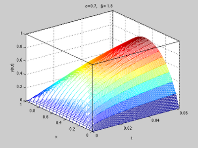

Matrix approach to discretization of ODEs and PDEs of arbitrary real order
Igor Podlubny (a), Tomas Skovranek (a), Blas M. Vinagre Jara (b)
(a) Technical University of Kosice, Slovakia
(b) University of Extremadura, Badajoz, SpainLast updated: 2008-11-26
http://www.mathworks.com/matlabcentral/fileexchange/22071
Abstract:
This article (in the form called "published m-file") illustrates the basic use of the functions implementing the matrix approach to discretization of derivatives of arbitrary real order (so-called fractional derivatives, or fractional-order derivatives), and to solution of ordinary and partial fractional differential equations.
The method is described in the articles [1] and [2].
For more information about fractional differential equations (i.e., differential equations containing derivatives of arbitrary real order) see, for example, the book [3].
Contents
- 1. What is in the box?
- 2. Evaluation of integer order derivatives
- 3. Evaluation of left-sided Riemann-Liouville fractional derivatives of a constant
- 4. Evaluation of right-sided Riemann-Liouville fractional derivatives of a constant
- 5. Fractional integral equations: an equation with the Riesz kernel
- 6. Symmetric Riesz derivatives
- 7. Solution of ordinary fractional differential equations: the Bagley-Torvik equation
- 8. Solution of partial fractional differential equations: fractional diffusion equation
- 9. Partial fractional differential equations with delayed fractional derivatives
- 10. Conclusion
- 11. Acknowledgments
- References
1. What is in the box?
This set of functions contains the following functions:
- bcrecur.m
- ban.m
- fan.m
- ranort.m
- ransym.m
- eliminator.m
- shift.m
The use of these functions for solving fractional integral equations is illustrated on an example of an integral equation with Riesz kernel:
- rieszpotential.m
The use of these functions for solving ordinary differential equations with fractional derivatives is illustrated on an example of the Bagley-Torvik equation:
- bagleytorvikequation.m
The use of these functions for solving partial differential equations with fractional derivatives is illustrated on various forms of fractional diffusion equations :
- fracdiffdemou.m
- fracdiffdemoy.m
- fracdiffdemoydelay.m
The description of each particular function or demo is given in its m-file.
This article itself is in the file:
- Matrix_Approach.m
2. Evaluation of integer order derivatives
First, let us demonstrate that it works for classical integer-order derivatives. Let us prepare an equidistant set of nodes and the function values in those nodes.
h=0.01; N = 1/h; t = (0:h:1)'; y = 4*t.*(1-t);
Let us start with evaluating first and second order derivatives (yder1 and yder2) of the function y(t)=4*t*(1-t) in the interval [0,1] using the backward finite difference approximations. For this, we use the BAN function:
D1 = ban(1,N+1,h); % discretization matrix for first derivative on N points with step h yder1 = D1 * y; % first derivative at all discretization nodes at once D2 = ban(2,N+1,h); % discretization matrix for the second derivative yder2 = D2 * y; % second derivative at all discretization nodes at once plot(t(1:N+1),y(1:N+1), t(2:N+1), yder1(2:N+1)', t(3:N+1), yder2(3:N+1)') legend ('y(t)', 'y\prime(t)', 'y\prime\prime(t)') title('Using backward differences') grid on
Now let us evaluate first and second order derivatives (yder1 and yder2) of the function y(t)=4*t*(1-t) in the interval [0,1] using the forward finite difference approximations. Here we use the FAN function:
D1 = fan(1,N+1,h); % discretization matrix for first derivative on N points with step h yder1 = D1 * y; % first derivative at all discretization nodes at once D2 = fan(2,N+1,h); % discretization matrix for the second derivative yder2 = D2 * y; % second derivative at all discretization nodes at once plot(t(1:N+1),y(1:N+1), t(1:N), yder1(1:N)', t(1:N-1), yder2(1:N-1)') legend ('y(t)', 'y\prime(t)', 'y\prime\prime(t)') title('Using forward differences') grid on
3. Evaluation of left-sided Riemann-Liouville fractional derivatives of a constant
Let us evaluate left-sided Riemann-Liouville fractional derivatives of the function y(x)=1 for orders $\alpha$ from 0 to 1. For this, we have to use the BAN function (Backward differences of order Alpha on N points).
h=0.01; N = 1/h; t = (0:h:1)'; y = ones(size(t)); colour = ['r' 'g' 'b' 'm' 'k' 'c']; for alpha=0:0.2:1 Dalpha = ban(alpha,N+1,h); ydera = Dalpha * y; plot (t(2:N+1), ydera(2:N+1), colour(5*alpha + 1)) hold on end set(gca, 'ylim', [-1 8]) title('Left-sided derivatives of \alpha-th order of a constant function y(t)=1') legend(' \alpha = 0', ' \alpha = 0.2', ' \alpha = 0.4', ' \alpha = 0.6', ' \alpha = 0.8', ' \alpha = 1') grid on hold off
4. Evaluation of right-sided Riemann-Liouville fractional derivatives of a constant
Let us evaluate right-sided Riemann-Liouville fractional derivatives of the function y(x)=1 for orders $\alpha$ from 0 to 1. For this, we have to use the FAN function (Forward differences of order Alpha on N points).
h=0.01; N = 1/h; t = (0:h:1)'; y = ones(size(t)); colour = ['r' 'g' 'b' 'm' 'k' 'c']; for alpha=0:0.2:1 Dalpha = fan(alpha,N+1,h); ydera = Dalpha * y; plot (t(1:N), ydera(1:N), colour(5*alpha + 1)) hold on end set(gca, 'ylim', [-7 2]) title('Right-sided derivatives of \alpha-th order of a constant function y(t)=1') legend(' \alpha = 0', ' \alpha = 0.2', ' \alpha = 0.4', ' \alpha = 0.6', ... ' \alpha = 0.8', ' \alpha = 1', 'Location', 'SouthWest') grid on hold off
5. Fractional integral equations: an equation with the Riesz kernel
Let us consider the integral equation with Riesz kernel (see [1]):
which has the exact solution
The analytical solution (for the comparison with numerical one) can be computed as follows:
clear all
t=-1:0.02:1;
nu=0.8;
y=gamma(1-nu)*(1-t.^2).^((nu -1 )/2)*(cos(nu*pi/2))/(pi);
Now let us solve this equation numerically. First, we have to prepare constants for the numerical solution:
alpha=-(1-nu); % we need to write the equation using left- and right-sided fractional derivatives h=0.005; % step of discretization N=2/h + 1; % number of points in the interval [-1, 1] B=zeros(N,N); % preallocation of memory
Then we make the discretization matrix R, which is easy, because the Riesz potential is simply a sum of left- and right-sided fractional integrals (since $\alpha$ is negative here, we work with fractional integrals):
R = ban(alpha, N, h) + fan(alpha, N, h);
After computing the right-hand side...
F=ones(N,1);
... we solve the system RY=F:
Y=R\F;
Finally, let us plot both solutions for comparison.
% Plot analytical solution: plot(t,y,'b','linewidth',1) hold on % Plot every 10-th point of the numerical solution: T=-1:h:1; plot(T(1:10:N),Y(1:10:N),'r*') % Add title, legend, and grid: set(gca, 'ylim',[0.4 0.8]) grid on title(['Integral equation with Riesz kernel: ' ... '\int_{-1}^{1}|t-\tau|^{-\nu}y(\tau)d\tau=1'], ... 'interpreter','tex') legend('analytical solution', 'numerical solution') hold off
We see that the numerical solution coincides with the analytical one.
6. Symmetric Riesz derivatives
Symmetric Riesz derivatives are defined as
Now let us evaluate symmetric Riesz fractional order derivatives of the function y(t)=4*t*(1-t) in the interval [0,1].
The analytical evaluation of the symmetric Riesz derivative gives:
First, let us plot this derivative for orders from 0 to 2:
h = 0.01; t = 0:h:1; for beta = 0:0.1:2; y1 = t.^(1-beta)/gamma(2-beta) - 2*t.^(2-beta)/gamma(3-beta); y2 = (1-t).^(1-beta)/gamma(2-beta) - 2*(1-t).^(2-beta)/gamma(3-beta); y = (y1 + y2)*2; plot (t,y, 'm') % set(gca, 'ylim', [-10 2]) hold on end grid on set(gca, 'ylim', [-10 2])
Now let us evaluate the symmetric Riesz fractional derivative for orders from 0 to 2 numerically, using the function RANSYM (in other words, using the representation of the symmetric Riesz derivative as a sum of the left- and right-sided Riemann-Liouville fractional derivatives). Note that the magenta lines (analytically evaluated symmetric derivatives) are now covered by green lines (numerical evaluation using RANSYM):
h = 0.01; t = 0:h:1; N = 1/h; y = 4*t.*(1-t); for beta = 0:0.1:2; RDbeta = ransym(beta, N+1, h); % RANSYM is used here yderb = RDbeta * y'; % beta-th derivative of the function y plot(t,yderb,'g') end set(gca, 'ylim', [-10 2])
And now let us evaluate the symmetric Riesz fractional derivative for orders from 0 to 2 numerically, using the function RANORT (in other words, using Ortigueira's definition of the symmetric Riesz derivative via centred differences). Note that the magenta lines (analytically evaluated symmetric derivatives) and the green lines (numerical evaluation using RANSYM) are now covered by blue lines (numerical evaluation using RANORT):
h = 0.01; t = 0:h:1; N = 1/h; y = 4*t.*(1-t); for beta = 0:0.1:2; RDbeta = ranort(beta, N+1, h); % RANORT is used here yderb = RDbeta * y'; % beta-th derivative of the function y plot(t,yderb,'b') end set(gca, 'ylim', [-10 2]) hold off
As we see, the analytical formula and both numerical approximations practically coincide.
7. Solution of ordinary fractional differential equations: the Bagley-Torvik equation
Matrix approach allows easy solution of ordinary differential equations with derivatives of any order (integer and non-integer). Let us consider the following initial value problem for the Bagley-Torvik equation (see [3], Section 8.3.2):
The following script solves Bagley-Torvik equation with zero initial conditions. Note how easy is the discretization of the equations.
clear all % (1) Prepare constants and nodes (this is the longest part of the script): alpha = 1.5; A = 1; B = 1; C = 1; % coefficients of the Bagley-Torvik equation h = 0.075; % step of discretization T = 0:h:30; % nodes N = 30/h + 1; % number of nodes M = zeros(N,N); % pre-allocate matrix M for the system % (2) Make the matrix for the entire equation -- this is really easy: M = A*ban(2,N,h) + B*ban(alpha,N,h) + C*eye(N,N); % (3) Make right-hand side: F = 8*(T<=1)'; % (4) Utilize zero initial conditions: M = eliminator(N,[1 2])*M*eliminator(N, [1 2])'; F = eliminator(N,[1 2])*F; % (5) Solve the system MY=F: Y = M\F; % (6) Pre-pend the zero values (those due to zero initial conditions) Y0 = [0; 0; Y]; % Plot the solution: plot(T,Y0) grid on
This procedure is implemented in the demo function bagleytorvikequation.m. To compute the solution for A=1, B=0.5, C=0.5 we can simply call that function:
Y = bagleytorvikequation(1,0.5,0.5);
8. Solution of partial fractional differential equations: fractional diffusion equation
Matrix approach is most useful for solution of partial differential equations with derivatives of any order (integer and non-integer), with time- and space- fractional derivatives. Let us consider the spatially one-dimensional fractional diffusion equation with fractional derivatives with respect both to time and to the spatial variable (see [2]).
The initial and boundary conditions are zero:
Discretization and solution of this problem using matrix approach is illustrated by the following sample code. In this case, we need left-sided fractional derivative with respect to time, and a symmetric Riesz derivative with respect to spatial variable. Let us take, for example,
clear all;
alpha = 0.7; beta = 1.8;
First, we have to set up the coefficients of the equation and the discretization nodes:
a2=1; % coefficient from the diffusion equation L = 1; % length of spatial interval m = 21; % Number of spatial steps of discretization n =148; % Number of steps in time h = L / (m-1); % spatial step tau = h^2 / (6*a2); % time step
Then let us generate the matrix for approximation:
B1 = ban(alpha,n-1,tau)'; % alpha-th order derivative with respect to time TD = kron(B1, eye(m)); % time derivative matrix B2 = ransym(beta,m,h); % beta-th order derivative with respect to X SD = kron(eye(n-1), B2); % spatial derivative matrix SystemMatrix = TD - a2*SD; % matrix corresponding to discretization in space and time
Now let us utilize zero boundary conditions. This means that we have to remove columns and rows corresponding to the boundaries from SystemMatrix:
S = eliminator (m, [1 m]); SK = kron(eye(n-1), S); SystemMatrix_without_columns_1_m = SystemMatrix * SK'; S = eliminator (m, [1 m]); SK = kron(eye(n-1), S); SystemMatrix_without_rows_columns_1_m = SK * SystemMatrix_without_columns_1_m;
Now let us prepare the right hand side:
F = 8*ones(size(SystemMatrix_without_rows_columns_1_m,1),1);
... and solve the system SystemMatrix_without_rows_columns_1_m * Y = F:
Y = SystemMatrix_without_rows_columns_1_m\F;
Now we only have to reshape the solution array (values for k-th time step are in the k-th column of YS)
YS = reshape(Y,m-2,n-1); YS = fliplr(YS); U = YS;
and plot it:
[rows, columns] = size(U); U = [ zeros(1, columns); U; zeros(1, columns)]; U = [zeros(1,m)' U]; [XX,YY]=meshgrid(tau*(0:n-1),h*(0:m-1)); mesh(XX,YY,U) xlabel('t'); ylabel('x'); zlabel('y(x,t)'); title(['\alpha =', num2str(alpha), ', \beta = ', num2str(beta)]) set(gca, 'xlim', [0 tau*n], 'zlim', [0 1]) box on
The demo function fracdiffdemoy(alpha,beta) is a wrapper for the above code.
9. Partial fractional differential equations with delayed fractional derivatives
Let us consider a fractional diffusion equation with two fractional derivatives with respect to time, one of them with delay (see [2]):
The initial and boundary conditions are zero:
Discretization and solution of this problem using matrix approach is illustrated by the following sample code. In this case, we need left-sided fractional derivative with respect to time, and a symmetric Riesz derivative with respect to spatial variable. To discretize the delayed fractional derivative with respect to time, we have to use also the "shifter" matrix (function SHIFT). Let us take, for example,
clear all; alpha = 0.9; beta = 1.9; alphad = 0.8; % order of delayed time derivative steps = 24; % number of time steps corresponding to the delay
First, we have to set up the coefficients of the equation and the discretization nodes:
a2=1; % coefficient from the diffusion equation L = 1; % length of spatial interval m = 21; % Number of spatial steps of discretization n =148; % Number of steps in time h = L / (m-1); % spatial step tau = h^2 / (6*a2); % time step
Then let us generate the matrix for approximation:
B1 = ban(alpha,n-1,tau)'; % alpha-th order derivative with respect to time TD = kron(B1, eye(m)); % time derivative matrix Bdelay = shift (ban(alphad,n-1+steps,tau)', steps); % delayed derivative of order alphad TDdelay = kron(Bdelay, eye(m)); % delayed time derivative matrix B2 = ransym(beta,m,h); % beta-th order derivative with respect to X SD = kron(eye(n-1), B2); % spatial derivative matrix SystemMatrix = 0.5*TD + 0.5*TDdelay - a2*SD; % matrix corresponding to discretization in space and time
Now let us utilize zero boundary conditions. This means that we have to remove columns and rows corresponding to the boundaries from SystemMatrix:
S = eliminator (m, [1 m]); SK = kron(eye(n-1), S); SystemMatrix_without_columns_1_m = SystemMatrix * SK'; S = eliminator (m, [1 m]); SK = kron(eye(n-1), S); SystemMatrix_without_rows_columns_1_m = SK * SystemMatrix_without_columns_1_m;
Now let us prepare the right hand side:
F = 8*ones(size(SystemMatrix_without_rows_columns_1_m,1),1);
... and solve the system SystemMatrix_without_rows_columns_1_m * Y = F:
Y = SystemMatrix_without_rows_columns_1_m\F;
Now we only have to reshape the solution array (values for k-th time step are in the k-th column of YS)
YS = reshape(Y,m-2,n-1); YS = fliplr(YS); U = YS;
and plot it:
[rows, columns] = size(U); U = [ zeros(1, columns); U; zeros(1, columns)]; U = [zeros(1,m)' U]; [XX,YY]=meshgrid(tau*(0:n-1),h*(0:m-1)); mesh(XX,YY,U) xlabel('t'); ylabel('x'); zlabel('y(x,t)'); title(['\alpha = ', num2str(alpha), ', ', ... ' \gamma = ', num2str(alphad), ', ', ... ' \beta = ', num2str(beta), ', ', ... ' k = ', num2str(steps) ]) set(gca, 'xlim', [0 tau*n], 'zlim', [0 1]) box on
The demo function fracdiffdemoydelay(alpha,alphad,beta,steps) is a wrapper for the above code.
10. Conclusion
The examples presented in this article illustrate the basic use of the matrix approach to discretization of derivatives and integrals of arbitrary real order (integer or non-integer), to numerical solution of fractional integral equations, ordinary differential equations of arbitrary real order, and partial differential equations of arbitrary real order.
In some sense, the described method is as simple as the Laplace transform method. Indeed, one can immediately write the Laplace transform of a linear ordinary differential equation by replacing the derivatives with the corresponding powers of the Laplace variable. Similarly, one can immediately obtain the discretization of ordinary and partial differential equations by replacing the derivatives with their discrete analogs in the form of triangular strip matrices.
It should be also mentioned that the presented method unifies the numerical solution of ordinary and partial differential equations of integer and non-integer order, and even some kinds of integral equations of Volterra type. This approach allows easy numerical solution of fractional differential and integral equations containing both left-sided and right-sided fractional derivatives (or fractional integrals).
11. Acknowledgments
The authors gratefully acknowledge the support from the National Scholarship Program of the Slovak Republic (visit of T. Skovranek to the University of Extremadura, Badajoz, Spain), Summer Fellowships Program of the Department of Electrical and Computer Engineering of the Utah State University (visit of I. Podlubny to Utah State University, Logan, USA), and grant SAB2006-0172 from the Ministry of Education of Spain (visit of I. Podlubny to the University of Extremadura, Badajoz, Spain).
References
[1] I. Podlubny, "Matrix approach to discrete fractional calculus", Fractional Calculus and Applied Analysis, vol. 3, no. 4, 2000, pp. 359-386 (http://people.tuke.sk/igor.podlubny/pspdf/ma2dfc.pdf ).
[2] I. Podlubny, A.Chechkin, T. Skovranek, YQ Chen, B. M. Vinagre Jara, "Matrix approach to discrete fractional calculus II: partial fractional differential equations", 2008 (http://arxiv.org/abs/0811.1355 ).
[3] I. Podlubny, Fractional Differential Equations, Academic Press, San Diego, 1999, ISBN 0125588402. (http://www.elsevier.com/wps/find/bookdescription.cws_home/673186/description#description)